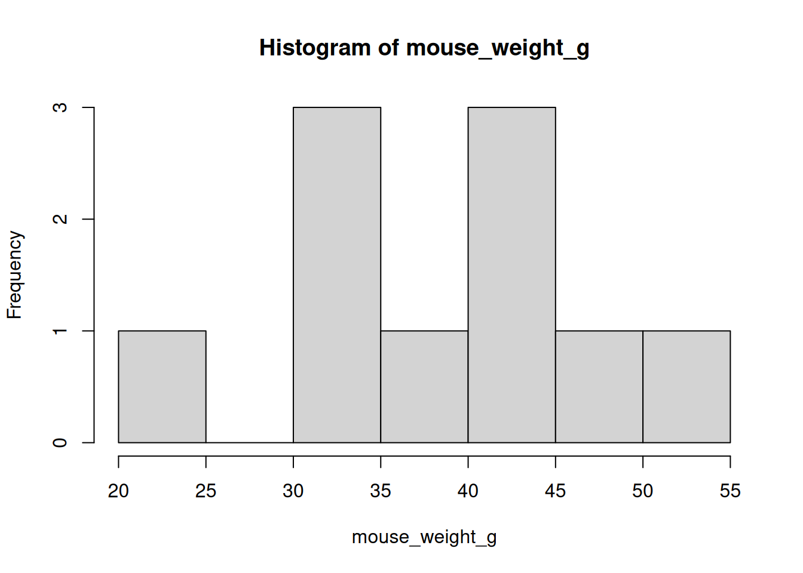

Getting started with R and the tidyverse - Answers
Author
BIOL33031/BIOL65161
❓Challenge questions
Use what you’ve learned this week to complete the following questions. Remember to use the script editor and to save your code as a .R script.
Question 1:
Create a numeric vector of at least 10 values representing measurements (e.g. weights of mice).
1. Calculate the mean, median, and standard deviation.
2. Use logical operators to identify which values are greater than the mean.
3. Plot a basic histogram of your values using hist().
#2. Use logical operators.# Recall the logical operators in R are:## greater than >, less than <,## greater than or equal to >=, less than or equal to >=## equal to ==, not equal to !=# Returns TRUE if the individual mouse weight is greater than the meanmouse_weight_g > mean_mouse_weight
# If you want the values themselvesmouse_weight_g[mouse_weight_g > mean_mouse_weight]
[1] 50 42 55 39 44 41
#3. histogramhist(mouse_weight_g)

Question 2:
Create a new tibble with at least 6 rows of your own made-up data (e.g. plant growth under different watering treatments).
Add a new calculated column of your choosing. Remember you need to assign the new output to an object name!
View the new tibble by clicking on it in the environment viewer.
# 1. New tibbleplant_growth <-tibble(treatment =c("drought", "drought", "flood", "flood", "normal", "normal"),height_cm =c(16, 14, 18, 19, 25, 28),flowers_n =c(33, 36, 21, 23, 35, 34))# 2. Add a new calculated colum# (here I calculated a flower-number-to-height ratio)plant_growth <- plant_growth |>mutate(ratio = flowers_n / height_cm)# 3. View the tibbleView(tibble)
Question 3:
Make a tibble recording the heights and sexes of 8 imaginary plants.
1. Add a new column that converts height from cm to m using mutate().
2. Use group_by() and summarise() to calculate the mean height for each sex.
# 1. New tibble (I copied and modified the one from Q2)plant_sexes <-tibble(sex =c("male", "male", "male", "male", "female", "female", "female", "female"),height_cm =c(16, 14, 18, 19, 25, 28, 33, 22),)# 2. Calculate mean height for each sexplant_sexes |>group_by(sex) |>summarise(mean_height_cm =mean(height_cm))
Question 4:
Create a tibble of 12 students with columns for name and favourite_colour.
Use count() to tally how many students chose each colour.
Which colour was most popular?
# 1. A tibble of 12 students with name and favourite_colour# Note: you can continue on new lines when inputting datafavourite_colours <-tibble(name =c("Charlotte", "Louise", "Al Khansa", "Jessica","Rana", "Deniz", "Magdalena", "Rebecca","Ernesto", "Sophie", "Riannah", "Rosie","Christine", "Zahraa", "Taoran", "Jake"),favourite_colour =c("Red", "Blue", "Green", "Yellow","Red", "Blue", "Blue", "Yellow","Red", "Blue", "Green", "Blue","Red", "Blue", "Green", "Yellow") )# 2. Use `count()` to tally how many students chose each colourfavourite_colours |>count(favourite_colour)# 3. In this case, it was Blue (n = 6)
Question 5:
Work with a built-in example dataset, Edgar Anderson’s Iris Data, iris, which gives the measurements in centimeters of the variables sepal length and width and petal length and width, respectively, for 50 flowers from each of 3 species of iris. The species are Iris setosa, versicolor, and virginica.
Load the dataset iris with as_tibble(iris). Don’t forget to assign it a name using the assignment operator <-.
Inspect the new dataset object you created.
Use select() to retain only the columns Sepal.Length, Petal.Length, and Species.
# 1. Load the dataset `iris` with `as_tibble(iris)`iris_df <-as_tibble(iris)# 2. Inspect the new dataset (any one of several options)View(iris_df)iris_dfhead(iris_df)# 3. Use select to retain only `Sepal.Length`, `Petal.Length`, and `Species`iris_df <- iris_df |>select(`Species`, `Sepal.Length`, `Petal.Length`)head(iris_df) # Inspect iris_df to check it worked